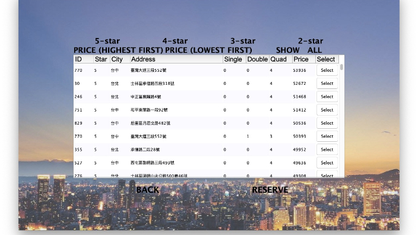

Project
Co-edit Trip Planing APP
Written in SwiftUI Serving as iOS engineer and designer Build up a complete iOS app from scratch
Restaurant Recommendation APP (based on psychological test)
Written in Python Serving as full stack developer Responsible for system architecture Connecting Google place API to get nearby location information, and recommend the restaurant for users based on the psychological test . , . .

Hotel Order Management System
Written in Java Serving as front-end engineer Responsible for interface design and development Integrate with back-end system to build up and interactive hotel order system
NTU - Monopoly Game
Written in Java Serving as front-end engineer Responsible for interface design and user experience testing Build up the database to store player info for follow-up game optimization
Supersonic Sensor Obstacle Avoidance Automatic Mobile Vessel
Written in C Serving as engineer Develop in STM 32 microcontroller Detect obstacle by supersonic sensor Construct an obstacle avoidance automatic mobile vessel.